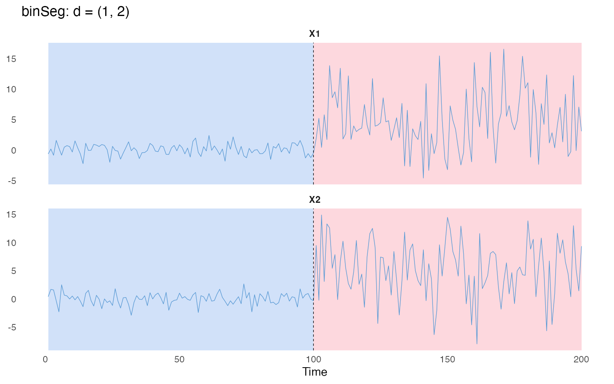

Getting started
getting-started.RmdThis page installs rupturesRcpp and runs a first
detection, from data to plot.
What the package does
rupturesRcpp detects change-points in multivariate time
series. A change-point is a time at which the behaviour of a series
changes: its mean, its variance, its autocorrelation, or its
relationship with other variables. Detection is offline: the whole
series is available at once, and the goal is the set of change-points
that best explains it.
The cost functions and search methods follow the Python library ruptures,
whose methods are reviewed by Truong, Oudre and
Vayatis (2020). rupturesRcpp implements them in C++
with Rcpp and RcppArmadillo, wraps them in R6 classes, and also accepts
cost functions written in R. The package was created during Google
Summer of Code 2025 for the R Project for Statistical Computing.
Installation
Choose how to install. This site documents the development version.
r-universe builds the development version from the main
branch on GitHub, with binaries for Windows, macOS and Linux, so no
compiler is needed.
install.packages("rupturesRcpp",
repos = c("https://edelweiss611428.r-universe.dev",
"https://cloud.r-project.org"))Building from GitHub needs a C++ toolchain: Rtools on Windows, the
Xcode command line tools on macOS (xcode-select --install),
or a C++ compiler on Linux (for example r-base-dev on
Debian and Ubuntu).
# install.packages("remotes")
remotes::install_github("edelweiss611428/rupturesRcpp")
install.packages("rupturesRcpp")The CRAN release (1.0.3) has binSeg, Window
and PELT with the "L1", "L2",
"SIGMA", "VAR" and "LinearL2"
costs, but not the rest of what this site uses:
-
DynpandcostFactory; - the
"LinearSIGMA","LinearL1"and"Custom"costs; -
$predict(nBkps = ...),$getHistory(),$plotElbow()and$segments().
A first detection
Load the package and check that the version is 2.0.0 or later:
library(rupturesRcpp)
packageVersion("rupturesRcpp")
#> [1] '2.0.0'Both series below change in mean and variance at
.
tsMat has one row per time point and one column per
series.
The variance changes as well as the mean, so the "SIGMA"
cost, which models both, suits this data. Binary segmentation
(binSeg) is a fast search method.
binSegObj = binSeg$new(costFunc = costFunc$new("SIGMA"))
binSegObj$fit(tsMat)
binSegObj$predict(pen = 100)
#> [1] 100 200$predict() returns the end of each segment, so the last
value is always the number of observations. Here it finds the one
change-point at
.
The penalty pen sets how many change-points are kept.
binSegObj$plot(d = 1:2)
Next steps
The Documentation explains each part of a detection: the cost function, the segmentation method and how many change-points to keep. Case studies has longer worked examples.